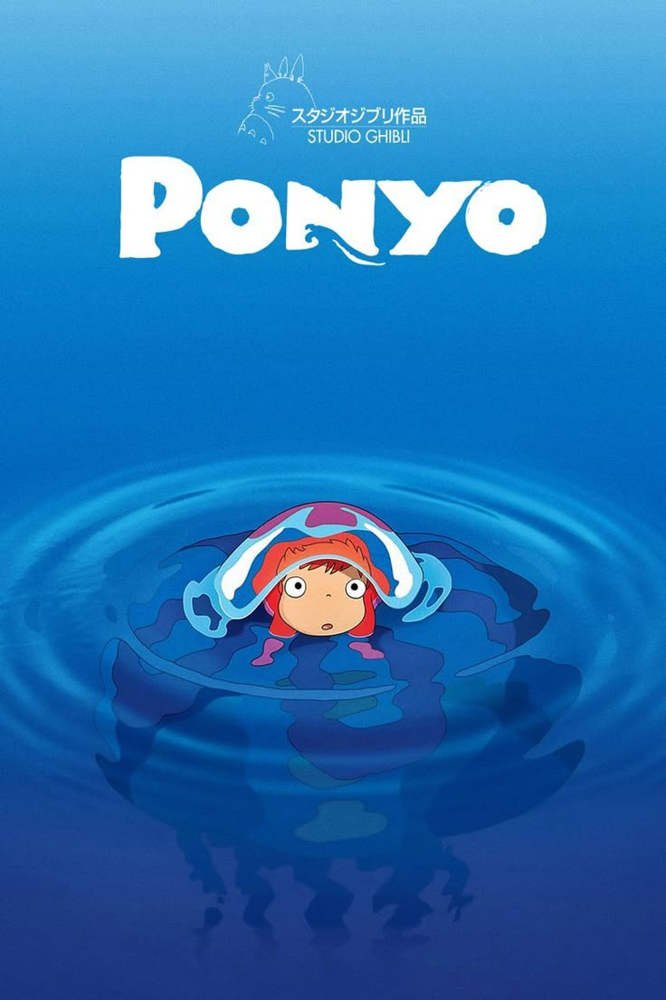

Director: Hayao Miyazaki | Studio: Studio Ghibli
"Welcome to a world of magic and waves."
Ponyo is a magical goldfish who sneaks away from her underwater home and meets a five-year-old human boy named Sosuke. They become best friends, and Ponyo uses her magic to turn into a human girl. But her strong magic accidentally causes a huge storm. Now, the two kids have to fix the world before the ocean floods everything.
← Back to Hub